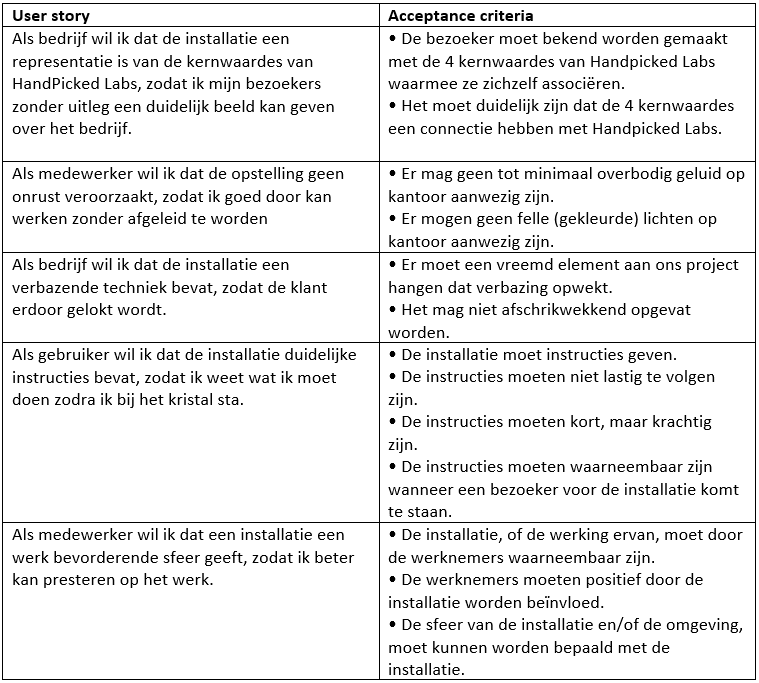

Product backlog:
Ieder heeft 4/5 userstories opgeschreven. Indien nodig was zijn hier nog aanpassingen aan gedaan om het beter bij INVEST te kunnen laten passen. Hierna zijn alle overeenkomende user stories samengevoegd en hebben we ze gesorteerd op prioriteit en ‘acceptance criteria' eraan toegevoegd.
user stories + acceptance criteria.
Dagelijks houden wij een stand-up meeting om 10 uur, waarin ik met de rest afspreek wat we gezamenlijk gaan doen die dag en ik beschrijf wat ik zelf ga doen. Hiernaast wordt de feedback na ons consult op de woensdagen genoteerd.
Na de presentatie hebben wij een peer feedback formulier ingevuld voor elkaar. Onder de resultaten reflecteer ik op wat er over mij gezegd is.
Dit pdf bevat een zelfreflectie voor mijn werkwijze en werk tijdens gate 2.